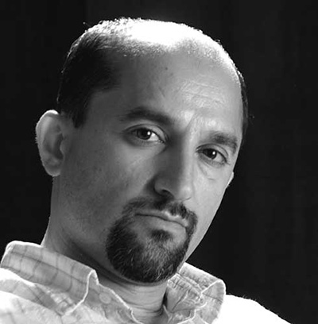

<figure>
	<br>
	<sub>Jalal Sepehr</sub>
</figure>	
<aside>
	<h3>JALAL SEPEHR</h3>
	<p>
		JALAL SEPEHR est né à Téhéran en 1968, autodidacte, il commence à faire de la photographie amateur en 1994 alors qu’il vit au Japon depuis trois ans. À son retour à Téhéran en 1996, il fonde l’agence de publicité Fanoos Studio avec Darushi Kiani, puis un site internet dédié à la promotion et la découverte de photographes iraniens contemporains.<br><br>
		Il a participé à environ soixante-dix festivals et compétitons de photo en Iran et dans le reste du monde.
		Sepehr dit de sa série ‘Water and Persian Rugs’ : « Je choisis des environnements inattendus pour créer de nouveaux moments, contrastes et diversités – c’est comme si les tapis flottaient et dansaient ». Un exemplaire de la photo exposée à la Galerie Nicolas Hugo pendant l’exposition ‘I RAN WITH IRAN’ fait partie de la collection d'art contemporain de la Société Générale.<br><br>
		Jalal Sepehr est représenté par la Galerie Esther Woerdehoff à Paris, Silk Road Gallery à Téhéran et Richard Young Gallery à Londres.<br><br>
		Il vit et travaille à Téhéran en Iran.
	</p>
</aside>
